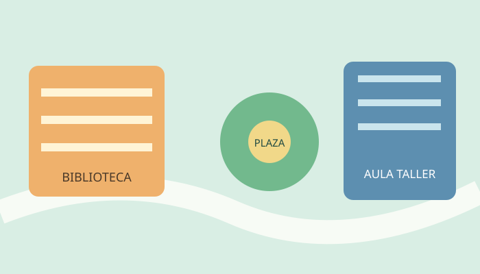

LICENCIATURA EN INNOVACIÓN SOCIAL
Una formación para mover ideas.
Cuatro años para combinar pensamiento crítico, herramientas de diseño y acción colectiva.
Un recorrido que une saber y hacer.
El plan está organizado en trayectos progresivos. Cada año integra talleres, laboratorios y experiencias con organizaciones del territorio.
Sociedad y cultura, metodologías de investigación,
comunicación y laboratorio de observación.
Diseño de servicios, políticas públicas, datos sociales,
gestión de proyectos y prácticas territoriales.
Seminarios electivos, incubadora de proyectos y trabajo
final integrador.
El campus es tu laboratorio.
Hacé clic en cada espacio para descubrir dónde suceden los encuentros.

Biblioteca abierta
Un espacio de estudio, archivos y colecciones digitales.
Plaza central
Un lugar de conversación y actividades comunitarias.
Aula taller
Prototipado, análisis y trabajo colaborativo.